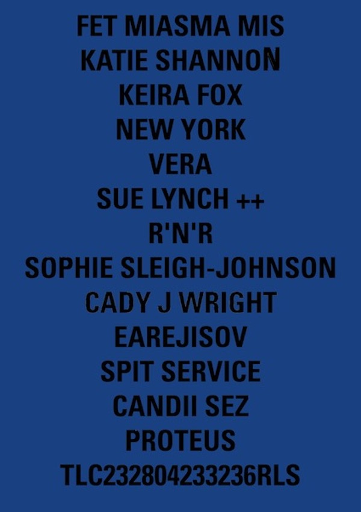
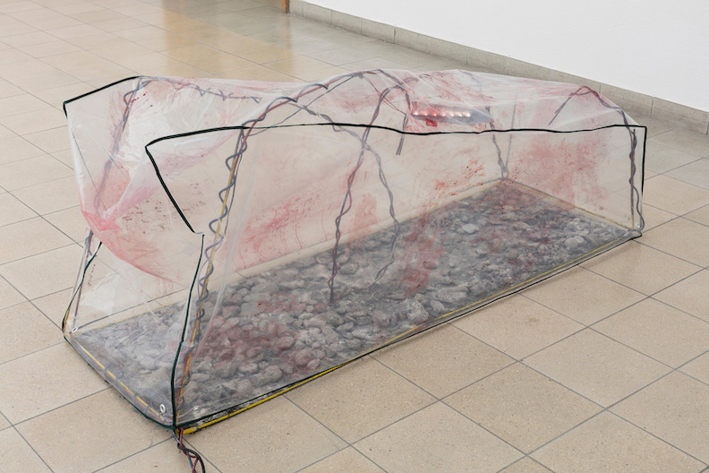
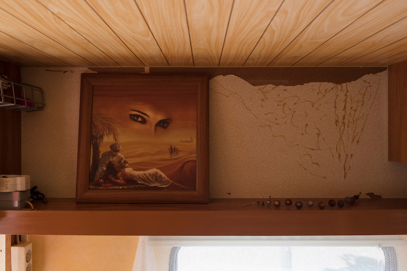

TLC23 at TINA
Postproductions at studiengalerie-1357 with The Institute of Scene Experiments initiative by Nikhil Vettukattil
how leisure always imitates labor, Kunstverein München, 2023
performance and installation, conceived by Jan Kunkel, Vera Karlsson, and Alie O.

FET MIASMA MIS, a TLC.23 event with participants on the poster, an exhibition by Kiera Fox and Katie Shannon, at Le Bourgeois, 3236rls London

During 2023 I produced music with harp and voice by Livia Rasku, 'Stringbabe', premiered at Garcia NRG a music event organised by me
at West Germany in Berlin and also played at Loop Hole in Berlin, we released an demo album on cd for Gaza fundraiser
Unless Useless in Keywork at bbberlin

The Ladies Club / TLC.23 performance event with Kiera Fox and Katie Shannon Fet Miasma Miss at Delta Mityba Vilnius

Dana Rosa ep, Primodial Void, Vera Karlsson and Finlay Clark ( Still House Plants)
Fermata at Leech Collaboration between Vera Karlsson and Iman Mohammed
Intervention with Julija Zaharijevic for The Ladies Club
Group Show at 3236rls, photography print
Wednesday makeup collaboration with Wednesday on "Harrods"
video for Lolina live in Kunsthaus Glarus Osmosis 2019






Nancy Halt in Sie sagen wo Rauch ist, ist auch Feuer
Nancy Halt Trailer 2017


Nancy Halt 2017-2020 was a collective work by Vera Karlsson, Julia Moritz and Bob Vanderwal.
Field recordings, video, caravan, mixed media installation, fotoalbums and more
SECRETS 2018
Globe II


Fire Is Space Piper Keys 2016
Cola at Forde 2016
Untitled (Knobs) Le Bourgeois 2016
Hotel Bloom Invite
Hotel Bloom at 3236rls 2015

Hotel Bloom Poster
Catfish Guests #2:Benedict Drew - Escape Routes 2014


"Thank you for the love aka Who Need Gitars Anyway?" sculpture and install as three channel video 2014
"Thank you for the love aka Who Need Gitars Anyway?" 2014